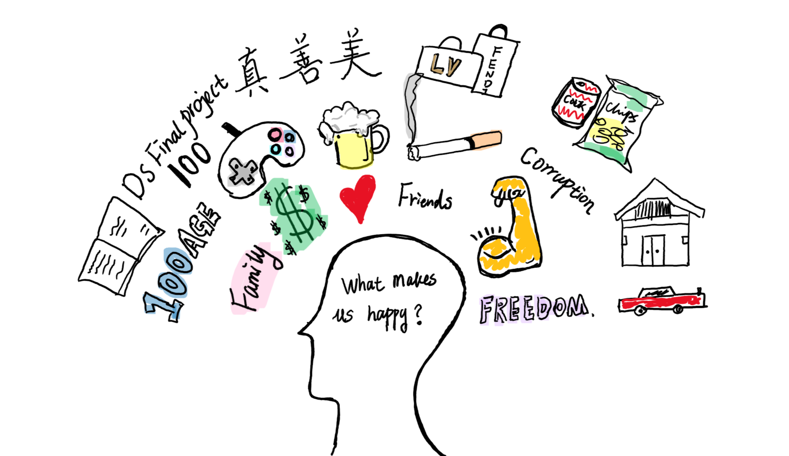

As civilizations are developing, the happiness of human being becomes an ambiguous topic. Simple material enjoyment is no longer the only determinant of mental pleasure. So, how the state of happiness in the world change overtime and what makes the world happy? We are trying to find the reasons, and our final goal is to provide helpful information for governments to make better decisions with respect to higher life evaluation.
The information was gathered primarily from The World Happiness Report created by the United Nations Sustainable Development Solutions Network (UNSDSN). It is an annual landmark survey of the state of global happiness that ranks 156 countries by how happy their citizens perceive themselves to be. The dataset we use contains rankings of national happiness together with various life factors correlated from 2005 to 2018.
Furthermore, we find capital longitude and latitude from kaggle to locate a country when drawing association map.
Firstly, to see the overal change of world happiness score along time, we draw a Global animation Map;
Secondly, to see the association between different factors and happiness score among years, we draw an interactive association app
Then, we perform Correlation analysis and Multiple Linear Regression in the Final Report. we analyses the correlations between happiness score and interested factors, and internal correlations in factors in different situations, Finally, we explores the associations between interested factors and happiness score
From the dataset and analysis for worldwide level, except the factor negative_affect, all of our interested factors have associations with happiness score. The top two factors are positive_affect and social_support. In addition, many factors corelated with each other like gdp and life_expectance, freedom and positive_affect. However, the associations change variably in different situations like different level of development, different continents.
For more details , click by report.